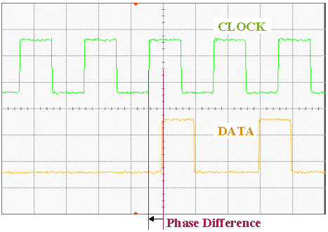

Signals without Phase Synchronization
Phase Flag OFF
The following figure shows "Area A" in the figure in the section, Preventing Reload of Primary Sets for Clock Port with a higher resolution on the time scale. It illustrates the phase shift between the data pulse and the clock pulse.

Functional changes
- Introduced before SmarTest 6.3.2